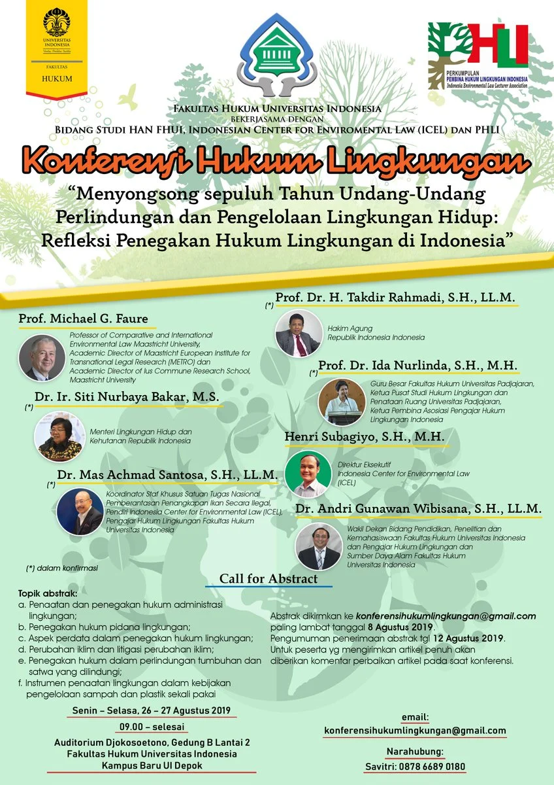

Wildlife: Loss, Damage, & Sanctions. A project on conceptualising the harm from & remedies to illegal wildlife trade.
Wildlife: Loss, Damage, & Sanctions. A project on conceptualising the harm from & remedies to illegal wildlife trade.
Aug 27, 2019

Grahat Nagara from the NGO, Auriga, presented the WILDS project at the Seminar Konferensi Hukum Lingkungan , Indonesia's leading conference on environmental law, hosted by the Indonesian Centre for Environmental Law (ICEL) and the Faculty of Law, University of Indonesia. Grahat's talk explored how Indonesian law allows for legal suits that could provide many types of remedies in large IWT cases.
In this photo, Grahat explains how large-scale cases of illegal trade in pangolin scales are traditionally prosecuted via criminal law, resulting in low fines and short prison terms. He proposed how civil liability approach could provide additional stiffer sanctions, while also offering remedies that better account for the harm caused by IWT.
Text are copied from https://jacobphelps.wixsite.com/wilds
The WILDS Project is supported by the UK Government through the Illegal Wildlife Trade (IWT) Challenge Fund.
As its contract, the project ends May 31, 2021.